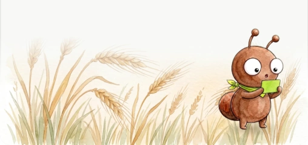

60+ video models
Video
Kling, Veo, Seedance,
Runway, Wan, MiniMax,
Grok Imagine, LTX
- MiniMax H3
- $0.011/s
- Veo 3.1 Fast
- $0.061/s


Antseed for creators
Create video, images and voice with leading AI models.
All through one Antseed key.
Problem
Credits, fast hours and queue time run out first.
Multiple logins between the idea and the final cut.
You see the cost after the work is done.
Another integration to rebuild before you can use it.
Solution
Antseed connects your apps and agents to AI services through a peer-to-peer network.
One key for video, image and voice models, at lower prices.
60+ video models
Kling, Veo, Seedance,
Runway, Wan, MiniMax,
Grok Imagine, LTX

35+ image models
Flux, GPT Image, Nano Banana,
Seedream, Recraft,
Ideogram
Voice models
ElevenLabs Turbo,
xAI TTS,
Qwen TTS
Solution
Your 2am deadline is close. The hero shot is missing.
Antseed reroutes a failed request so you can keep editing.
Keep the same model and prompt
Retry through another compatible provider
Use the same key and endpoint
Privacy: Antseed does not store your prompts
Veo · your hero shot
The request fails at this provider
Same model and prompt · compatible provider
Response returned through the same endpoint
Reduce dependency on 1 Provider
Solution
Connect once through the Antseed Gateway. Access video, image and voice models from one endpoint.
Connect your workflow
Use models across providers.
Keep one integration for the whole cut.
Bring in the team
Issue individual keys when needed.
Set a budget for each editor.
Keep the overview
See usage and spend together.
Keep your choice of providers.
Network Stats
Source: AntSeedStats · CC BY 4.0 · 16 November 2026 · 13:30 UTC
View AntSeedStatsArrow keys to navigate · F fullscreen